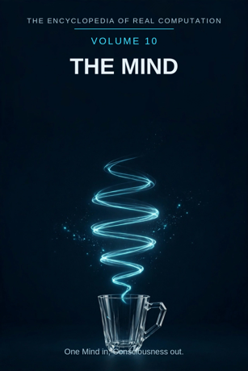

Chron.
The Encyclopedia of Real Computation

One Mind in, Consciousness out.
Home domain: Cognition
One Mind in, Consciousness out.
◉ A Principle .... The Mind ◎ B Purpose ...... Awareness ◉·◉ A.A Alpha ...... the Thinker ◉·◎ A.B Cross ...... the Idea △ X Primitive .... Sensations ⚙ Y Protocol ..... Attention ⬢ Z Product ...... Perception ◐ i State ........ the Unconscious ⚖ j Condition .... the Waking ⊞ N Set .......... the Faculties ◷ h Time ......... the Moment ▣ C Context ...... the Self ▦ D Domain ....... the Psyche ♥ E Emotion ...... Feeling ➤ F Intention .... Reflection ↻ pi Cycle ........ the Day ➔ phi Step ......... the Thought ⚄ e Probability .. the Hunch • h-bar Planck ..... the Impression
Σ sigma Summation .. the Personality
◈ gamma Scale ...... Intelligence Δ delta Change ..... Learning ⁂ sigma' Options ... the Possibilities Ω Omega Answer ..... Consciousness
Every volume of this encyclopedia does the same work. The Prologue figures the subject whole. Then come twenty-four chapters, one per term, each doing four jobs in plain English: what the term means, where it sits in the computation, how it works on the volume's one running example, and what breaks without it. Then the Data, whole. Then the Crossings. Then the Sum. The running example of this volume is one cup of coffee, perceived - the same cup, watched closely, from first sensation to the moment you know that you know.
The Mind: the inner field where the world is met - where sensation arrives, is noticed, is understood, and is known to be known. Awareness: the mind turned toward what it holds; the light inside the field, without which the field's contents sit in the dark.
◉ The Mind. ◎ Awareness = the root of the Mind: aimed at itself,
the mind asks what it is holding, and whether it knows it holds it.
◉·◉ the Thinker: the mind turned on itself becomes a person who
thinks. ◉·◎ the Idea: the mind crossed with awareness - the content the crossing lights up. △ Sensations = the Mind parted over the Faculties. ⚙ Attention = the function of the Sensations, the working applied. ⬢ Perception = Sensations times Attention, the product, once the Idea has carried it to Awareness. ◐ the Unconscious = the root of negative Mind: what the mind holds without the light on it. ⚖ the Waking = the condition, element by element: perception stands while waking holds. ⊞ the Faculties = the set: Perception, Memory, Attention, Language, Reasoning, Feeling. ◷ the Moment: the mind's cargo travels in instants.
▣ the Self: where the mind stands. ▦ the Psyche = the Faculties
crossed by the Study. ♥ Feeling = the difference a landing makes.
➤ Reflection = the intention that carries a context. ↻ the Day: awareness returns to its ground fresh each morning. ➔ the Thought: one step of thinking, taken, stood on. ⚄ the Hunch: the odds a perception carries before it is sure. • the Impression: the least piece, one first touch of sense.
Σ the Personality: all of a mind, summed as one. ◈ Intelligence: the scale of a mind's reach. Δ Learning: the mind's own measure of its change. ⁂ the Possibilities: the spread of what might be thought next. Ω Consciousness: the answer the mind resolves into - knowing, and knowing that you know.
IF If the Mind to Awareness, then Sensations & Attention is Perception, or the Unconscious while the Waking for the Faculties, through the Moment, in the Self, the Psyche, Feeling, Reflection, at the Day by the Thought, with the Hunch over the Impression - sum the Personality, scale Intelligence, change Learning, options the Possibilities - therefore Consciousness.
Stands below, after the chapters, figured whole: the Faculties crossed by the Study, twenty-four cells, and the six contexts.
The seven laws, run on this seed. Pythagoras: the Mind squared plus Awareness squared overlays the Self squared - the triangle checks in the Where, the If, and the Data identically. Law of cosines: the tilt between mind and awareness is set by context - at waking it is upright and steady, in dreaming it lies nearly flat and the same contents lean strangely. Binomial: the middle term is the Idea, two times over - the mind shapes the idea, and the idea reshapes the mind that thinks it again tomorrow. AM-GM: Awareness is the geometric mean between the Mind and the One - between all a mind holds and the one point of view it is held from. Log law: the Intelligence of a Perception is the Intelligence of the Sensations plus the Intelligence of the Attention - reach adds where work multiplies. Complex modulus: the Unconscious is counted in the size of the mind; the mind is larger, not smaller, for the part of it that works unlit. Triangle inequality: no route from Sensations to Perception is shorter than Attention; skip it and you hold a bare impression, labelled as such in the last term but one.
The mind begins with the plainest arrivals there are: sensations - light, sound, warmth, scent, taste - each one small, exact, and making no claim by itself. Attention is the field's working: the choosing, out of everything arriving, of what will be followed. Its product is perception, the world assembled - not a copy of what arrived but a construction from it, stamped with the mind's own habits. The field is candid about its conditions: perception stands while waking holds, and it counts its shadow openly - the unconscious, the greater part of the estate, working without a lamp. It runs in moments and thinks in steps, one thought at a time, and it keeps its odds printed on its guesses: the hunch is honoured as a hunch and not promoted past its evidence. Its history is the day, returning each morning to re-perceive the same world one level of familiarity up. And its finish is the strangest word in this encyclopedia: consciousness - the moment the coffee is not only perceived but the perceiving is perceived, and the mind, for an instant, watches itself drink. One Mind in, Consciousness out.
What it means. The mind is the inner field where the world is met: everything sensed, thought, felt, and remembered happens somewhere, and that somewhere is this volume's subject. It is the only field in the encyclopedia that the reader is inside while reading.
Where it sits. The Mind is the Principle of this volume, the seed every other term grows from: Awareness is its root, the Thinker its self-product, the Idea its cross.
How it works. A cup of coffee stands on the table. Before any chapter of this volume runs, there is only the cup and the field it is about to arrive in. Everything that follows is the mind taking delivery of one ordinary object completely - and finding, on the way, that delivery is an achievement, not a given.
What breaks without it. Every other volume is known by a mind or not at all: physics is perceived before it is proved, medicine is felt before it is charted. Remove the Principle and the other fields keep their objects and lose their only audience.
What it means. Awareness is the mind's light: the difference between holding something and knowing you hold it. A sound you never noticed still entered; awareness is what its entering becomes when it is registered, available, and yours.
Where it sits. Awareness is the Purpose, B = the square root of A: the mind aimed at itself extracts the demand to register, not merely receive. And B squared = A: awareness fully settled on the mind becomes part of the mind itself - background competence, ready without being watched.
How it works. The coffee's steam reached the eye before it was noticed; its scent was in the room before it was anyone's. Awareness is the small sunrise inside the example: the moment the cup stops being scenery and becomes company. The purpose steers every later term - attention follows it like a lamp follows its bearer.
What breaks without it. A mind without awareness would receive the world and transact nothing with it: sensation in, behaviour out, nobody home in between. The Purpose is what makes the field an inner life and not a wiring diagram.
What it means. The thinker is the mind embodied: a person in whom the field's habits have become character - what they notice first, what they doubt on sight, the style of their attending. Two minds can receive the same world and furnish two different rooms.
Where it sits. The Alpha, A times A: the field turned on itself. The same perception held by a stranger and by a practiced thinker differs the way a fact differs in any field - in the company it keeps: memories, distinctions, three other cups it is compared to.
How it works. Hand the cup to a distracted morning-person and it is fuel, barely registered. Hand it to the same person awake and attentive and it is a small ceremony - aroma, warmth, the day beginning on purpose. The cup did not change. The holder is the difference.
What breaks without it. An unowned mind is a sensor with no one home to file the report: data without a biography, perceptions nobody's. The thinker is where the field keeps its name.
What it means. The idea is the interaction term: the mind crossed with awareness, the content that stands lit between them. A sensation is an arrival; an idea is an arrival that has been taken up - held still, turned round, made available to thought.
Where it sits. The Cross, A times B, counted twice: the mind shapes the idea (you find in the cup what your faculties bring), and the idea reshapes the mind (a new idea about coffee reorganises every future cup). The cross is where fields catch fire; here it is where experience becomes thought.
How it works. Mid-sip, the idea arrives whole: this is yesterday's roast, or the good beans, or too strong. It was not in the steam. It was built at the crossing, out of sensation and memory and awareness, in less than a second, and it immediately starts editing the next sip.
What breaks without it. With either factor at zero - a mind receiving with nothing lit, or light with nothing arriving - the product is zero and nothing is thought. Sensations would pile up like unopened post.
What it means. Sensations are the primitive material: one arrival at a time - a colour, a warmth, a scent, a sound - each simple, exact, and making no claim by itself. It is the clay of the inner world, delivered by the senses in a constant stream.
Where it sits. X = A times N: the Principle spread across the Set. Every faculty receives the mind as its own sensations - perception as sights and sounds, feeling as warmth and ease, memory as the faint echo of all of them.
How it works. The coffee begins as sensations only: brown, steam, a bitter-sweet smell, heat through the cup wall, the small clink of the spoon. Nothing has been assembled yet; nothing has been named. The hunt of this volume starts here, with the arrivals at their rawest.
What breaks without it. No primitives, no products: a mind with nothing arriving would have only its own furniture to perceive, and would mistake it, forever, for the world.
What it means. Attention is what may be done to sensations: select, hold, follow, compare, release - the mind's working, narrow by design. Everything arrives; almost nothing is attended. That narrowing is not a failure of the field. It is the field.
Where it sits. Y = f(X), with f the root of Awareness: the working is governed by the purpose - attention is spent where awareness will need it, not scattered evenly over the flood. An attention that followed everything would follow nothing.
How it works. Of the whole kitchen's arrivals - clock, light, traffic outside, the cup - attention takes the cup: follows the steam, checks the heat with a careful first touch, waits for the smell to finish arriving. The rest is not deleted; it is unchosen, held at the edge in case the hunch calls for it.
What breaks without it. Sensations without a working stay a flood: a roomful of arrivals nobody reads. Attention is the field's hands, and its whole economy.
What it means. Perception is the product: sensations worked by attention and carried across the idea, arriving as a world - the cup, on the table, mine, hot, ready. It feels like a copy of what is out there. It is a construction, and the difference matters every time the construction is fooled.
Where it sits. Z = X times Y: the product, extent-shaped - it reaches exactly as far as its factors reach, and it can always be factored back for audit: which sensations, which attention. A perception that cannot be factored is a hallucination with good manners.
How it works. The arrivals assemble: colour plus scent plus warmth plus the memory of a thousand mornings, and there it stands - coffee, perceived, one object where a moment ago there was weather. The name arrives with the assembly, as it always does, pretending it was there first.
What breaks without it. Working that never sets into product is a mind forever arriving and never arriving anywhere: sensations attended, nothing ever seen. Perception is where effort becomes a world.
What it means. The unconscious is the mind's shadow: everything the mind holds and does without the light on - habits driving, memories steering, skills running, old feelings setting today's weather. It is not an enemy in the basement. It is most of the house, unlit.
Where it sits. i = the root of negative A: the state of the principle itself, counted in the mind's size by the modulus law. The shadow is not outside the mind; honest maps of the field are mostly shadow, drawn in.
How it works. The hand lifts the cup, judges its weight, avoids the hot side, and finds the mouth - a ballet no awareness directed. The thousand learned movements of coffee-drinking run in this chapter, competently, while awareness is free to think about the day. The shadow is the staff; awareness is only the manager.
What breaks without it. A mind that hid its unconscious would credit awareness with work it never did, and be helpless to explain its own habits, slips, and skills. Naming the shadow is what lets the field trust its light to be light, and not the whole story.
What it means. Waking is the mind's standing condition: the state in which perception is agreed to be checked - against the room, against other people, against yesterday. Dreams are vivid; waking is verifiable, and the field rests its claims on the difference.
Where it sits. j, the Condition: the root taken element by element. Perception stands while waking holds; each faculty's report is verified against the condition, one by one. A claim the waking state contradicts - the cup that floats - is politely returned to the dream it came from.
How it works. Our coffee is perceived in the waking state, and that plain fact does heavy lifting: the cup stays where it was put, the heat agrees with the thermometer's opinion of hot, the second sip resembles the first. The condition is the example's most honest narrator, and the easiest to overlook.
What breaks without it. Unconditioned perception is a parliament where dreams vote: every impression equal, none checkable. The field that states its condition can be argued with; the field that hides it can only be believed or sedated.
What it means. The faculties are the mind's great divisions: Perception (the assembling), Memory (the keeping), Attention (the choosing), Language (the naming), Reasoning (the following), Feeling (the colouring). Each is the whole mind read in one direction, and no thought respects their borders for long.
Where it sits. N, the Set - the term everything is counted in: sensations are A times N, the domain is N crossed by the Study, the sum runs over N. The set is complete as this volume defines it and open underneath; faculties are still being told apart as the field learns finer distinctions.
How it works. The coffee visits four faculties in one sip: perception assembles it, attention holds it, memory prices it against yesterday's cup, feeling rules on it. One event, four faculties, no borders crossed illegally - the set is a sorting, not a fence.
What breaks without it. Unsorted mind is a heap of episodes: all really experienced, none findable again, each morning re-learning what a cup is. The set is the mind's promise that experience can be kept in order.
What it means. The moment is the mind's unit of time: the short now in which a perception stands whole before the next replaces it. Experience feels continuous; it is delivered in moments, the way film is delivered in frames, and the smoothness is one of the field's finest constructions.
Where it sits. h, Time: the passage the whole figure moves through. The same cup stands in many moments - first seen, first sipped, half gone - and its sameness across them is not given; memory and attention stitch it, moment by moment.
How it works. Watch the example closely, as instructed, and the continuity frays into beads: the steam seen, the scent caught, the heat judged, the taste arriving - each a moment, each whole, the row of them adding up to "drinking a coffee." The moment is the volume's clock, and the coffee is carried by it.
What breaks without it. A mind without time would hold one perception forever or all of them at once: either a statue of a cup or the whole day in a single crush. The moment is what makes experience a story instead of a stain.
What it means. The self is where the mind stands: its base context, the standing-place from which everything is perceived - this body, this history, this side of the cup. Other contexts - company, the classroom, the dream - transform the same faculties; the self is where they are first read.
Where it sits. C, the Context, first of the setting terms: contexts transform the domain (the table stands in the Data), and the difference a context makes is measured by Feeling, the next part's first term.
How it works. The coffee is perceived from one side only - yours. Its far side, its inside, its next minute are supplied by the self's standing habits of completion. Another self at the same table gets a different cup: same object, different context, honestly different perception.
What breaks without it. Context-free perception can be imagined - a view from nowhere - but the field as lived stands in a self or nowhere. Every report in this volume quietly begins "from here."
What it means. The psyche is the mind's whole territory: the faculties crossed by the study - every faculty in its four movements, from the question it asks to the teaching it hands on. The full table stands in the Data, twenty-four cells, every one figured.
Where it sits. D = N crossed by R: the set by the study. A faculty becomes territory only when the study moves across it; the domain is a crossing, never a list - and the thinker is the one place all the crossings meet and answer to one name.
How it works. Read the coffee's path in the table: it is asked after in Perception's row, settled by Memory's Trace, understood in Reasoning's Conclusion, and handed on in Language's Telling - told, at breakfast, as "good coffee." The territory is one mind; the example has walked its roads.
What breaks without it. Faculties without a domain are six solitudes, each with its own account of the same morning, none reconcilable. The psyche is the peace treaty and the road map in one.
What it means. Feeling is the difference the mind makes when anything lands: the colouring that arrives with every perception and reports, instantly, whether this is good, bad, safe, dull, or the best part of the morning. It is not decoration on perception; it is perception's first review, filed before reason sits down.
Where it sits. E, Emotion: the difference between contexts, C1 minus C0. Before the sip, the cup is an intention; after it, the cup is an experience - and the size of that change is this term. In this volume, emotion is also a faculty in the Set: feeling both colours the work and is one of the workers.
How it works. The first taste lands with its review attached: pleasure, mild and unmistakable, before any thought about beans or brewing has formed. By the time reasoning complains the cup is strong, feeling has already decided whether that is a complaint at all.
What breaks without it. Two minds with identical perceptions are inwardly equal and humanly unequal: the one that feels its world knows what matters in it; the one that doesn't must reason out, slowly, what to want. A field that cannot register the difference keeps every experience and is guided by none.
What it means. Reflection is the mind's intention: the deliberate turning of awareness back on the mind's own holdings - examining a perception, auditing a memory, cross-examining a feeling. It is the only operation in this encyclopedia performed by a field on itself, in the same room, at the same time.
Where it sits. F, Intention: the operator that carries contexts - C1 = C0 + F. Apply reflection and the same psyche becomes the conversation's exchange, the classroom's discipline, the dream's strange country. What survives the carrying is the content; what is added is the examination.
How it works. Mid-cup, reflection catches the example in the act: you notice that you noticed the steam. Nothing about the coffee changes, and everything about the perceiving does - the morning acquires a witness. It is the smallest possible demonstration of this volume's Answer, arriving early, as a rehearsal.
What breaks without it. An unreflective mind perceives the world and never itself: rich in experience, poor in correction, unable to find its own errors because it never visits the room they are kept in.
What it means. The day is the mind's cycle: waking, perceiving, tiring, sleeping, and waking again to the same world at one more turn of familiarity. The field does not run in a line; it runs in days, and its deepest reset - sleep, with the unconscious holding the fort - is built into the loop.
Where it sits. pi, the Cycle: the loop the figure runs, turning by thoughts. The day is also the field's memory policy: nothing is perceived once and kept perfectly; it is re-met each morning, and the re-meeting is where the strange becomes the known.
How it works. This same cup, tomorrow, will be perceived faster, judged quicker, and noticed less - one turn of the day-spiral, the same ground one level of familiarity up. The example is designed to be repeated; that is what a morning ritual is.
What breaks without it. A linear mind would perceive each thing once, at one depth, and the depths would never agree. Worse, it would never sleep - and a field that cannot close its loop cannot open it refreshed.
What it means. A thought is one step of thinking: a single move made and stood on - the cup is hot; so, care; so, wait. Thinking feels like a flow; examined, it climbs in steps, and each step is small enough to check before the next is risked.
Where it sits. phi, the Step: the advance at the cycle's turn. In the grammar, the cycle turns by the step - at the Day by the Thought. Too small and the morning drowns in gravel - every micro-sensation a separate crisis; too large and the step is a leap of faith wearing thought's clothes.
How it works. The coffee is thought in a short staircase: steam, so hot; hot, so wait; waiting, so smell it properly; smelling, so yesterday's was better. Four steps, each standing on the last, the whole staircase climbed before the first sip.
What breaks without it. A mind that thought in single leaps would believe or disbelieve whole mornings at once, like prophecies. Steps are how thinking stays checkable by its owner.
What it means. The hunch is the odds a perception carries before it is sure: the mind's way of betting in advance of evidence - that cup is too hot, that face is friendly, that sound is the kettle. Hunches are often right, which is why they exist; they are printed here as odds, which is why they can be trusted exactly as far as they deserve.
Where it sits. e, Probability: with the Hunch over the Impression - every point of the field carries its odds printed beside it. Attention is the machine that tests the setting: the hunch proposes, the next sensation disposes.
How it works. The hunch about the coffee arrives before the lips do: too hot, by the steam's look alone. It is right often enough to save a tongue a thousand times a year, and it is held as a hunch - the first sip is still a test, not a formality.
What breaks without it. Without printed odds, a mind cannot distinguish its near-certainties from its guesses, and treats the familiar cup and the stranger's claim with the same grip - burning itself on the one and swallowing the other.
What it means. The impression is the least piece of the mind: one first touch of sense - the first thread of scent, the first glint off the cup - before assembly, before naming. Below it there is no perceiving, only finer guessing about arrivals.
Where it sits. h-bar, the Planck term: the smallest resolution of the figure. The Sum of this volume is taken at the impression's grain: the total of a mind is defined over single touches, and parts of touches, all the way down.
How it works. Before there was coffee there was an impression: something warm-smelling, at the edge of the morning, not yet a thing. Everything the volume has built stands on grains like that one. The least piece is where the world first gets its foot in the door.
What breaks without it. No least piece, no arrival: perception would have to begin already assembled, which is to say it could never begin. The grid of every volume stands on there being a smallest touch to address.
What it means. The personality is the mind summed: all the faculties, habits, memories, and feelings of one thinker read as one character. It is why the same cup is an event in one life and a non-event in another - the sum differs, so the morning does.
Where it sits. sigma, Summation: the total taken over the Set, whole, every faculty counted, none sampled. It is the inverse of the parting that made Sensations: the field breathes out into arrivals and in into one person.
How it works. Sum our coffee-drinker entire - the memories that price the cup, the feelings that review it, the habits that lift it, the language that will tell it - and the total is not a mechanism but a someone: particular, consistent, recognisable across a room and across forty years of mornings.
What breaks without it. An unsummed mind is a bundle of faculties drifting apart: memory reporting to no one, feeling colouring nothing in particular. The personality is the field's answer to the question of whose morning this is.
What it means. Intelligence is the scale of a mind's reach: how much it can hold, connect, and carry across. It is a measure, not a medal - the same mind reads large on pattern and small on faces, and the scale is honest only when it is read faculty by faculty, at the magnification the question needs.
Where it sits. gamma, Scale: the translator of the figure. By the log law, the intelligence of a perception is the intelligence of its sensations plus the intelligence of its attention - which is why keen senses with wandering attention, or dull senses with great attention, each cap the product in their own way.
How it works. The coffee asks little and gets it: patterns in steam, predictions about heat, analogies to every cup before. Set the same mind at a chessboard or a stranger's grief and the scale reads differently in each direction. Magnitude: variable, and honestly so.
What breaks without it. Read at one magnification, the field cannot tell its gifts from its gaps, and sends the thinker to polish both with equal reverence - or to apologise for the wrong one.
What it means. Learning is the change this whole volume exists to allow: the mind revised by its own experience - a perception that alters the next perception. It earns the delta place twice: it is the field's change, and it is the field changing its mind, its first impressions corrected by their sequels.
Where it sits. delta, Change: applied in the closing run after the sum and the scale are known - change read in full view of the whole personality. Learning is never one moment's work; it is read off the column of days, whole.
How it works. Today's coffee teaches tomorrow's: the burn once suffered becomes the hunch that waits; the roast once praised becomes the standard the next cup is priced against. Nothing in the cup instructed anyone. The whole of it is the mind keeping its own corrections.
What breaks without it. A mind without its change-term would perceive its ten-thousandth cup exactly as blankly as its first: experience without inheritance, mornings without accumulation - a goldfish's eternity in a human skull.
What it means. The possibilities are the mind's open spread: everything that might be thought next - the questions this cup raises, the memories it might summon, the plans it might start. They are printed in this volume as options, not events: the spread of what the next thought may be.
Where it sits. sigma-prime, the Options: last before the Answer, by the book's discipline. No consciousness in this encyclopedia is read until its spread has been shown; a mind printed without its possibilities looks more finished than any mind is.
How it works. One cup, and the spread fans out: yesterday's conversation, the letter to write, the taste that might be chocolate in it, the idea for the work waiting upstairs. Most will never be thought. Their being available - named, near, warm - is the mind's capital, the specific shape of its next hour.
What breaks without it. Hide the spread and the field presents each thought as the only thought - which is how minds become ruts: the same perception, the same conclusion, the same morning, forever, with the exits unmarked.
What it means. Consciousness is what the mind resolves into: knowing, and knowing that you know - the world perceived and the perceiving itself lit. It is the only answer in this encyclopedia that can read its own chapter, and it is doing so now, which the volume notes without making a fuss about it.
Where it sits. Omega, the Answer: the limit of the whole figure, and its door back - consciousness shows the next possibility (Chapter 23 keeps them ready), the possibility roots the next thought. The volume closes where tomorrow's first impression reopens it.
How it works. It happened, briefly, at the cup: steam, scent, taste - and then the small extra fact, you, noticing. The coffee was perceived, and the perceiver was perceived perceiving it. Nothing in the cup changed. Everything the volume is about stood in one moment, complete, drinking coffee.
What breaks without it. Without a resolution the computation turns and never lands: sensations gathered, attention worked, faculties summed - and no point at which the field may say "I am here, and this is mine." One Mind in, Consciousness out.
THE DOMAIN - THE FACULTIES CROSSED BY THE STUDY (24 CELLS, WHOLE)
The Study runs in four movements: the QUESTION the faculty asks, the FACT it settles, the UNDERSTANDING it reaches, the TEACHING it hands on.
PERCEPTION ... Question: the Glimpse - Fact: the Notice - Understanding: the Scene - Teaching: the Report
MEMORY ....... Question: the Echo - Fact: the Trace -
Understanding: the Story - Teaching: the Retelling
ATTENTION .... Question: the Pull - Fact: the Focus -
Understanding: the Priority - Teaching: the Pointing
LANGUAGE ..... Question: the Name - Fact: the Term -
Understanding: the Meaning - Teaching: the Telling
REASONING .... Question: the Puzzle - Fact: the Inference -
Understanding: the Conclusion - Teaching: the Explanation
FEELING ...... Question: the Stir - Fact: the Mood -
Understanding: the Weather - Teaching: the Expression
THE SELF (base) ....... Emotion Feeling, Intention Reflection
gives THE PSYCHE. THE COMPANY OF OTHERS . Emotion Warmth, Intention Conversation gives THE EXCHANGE.
THE CLASSROOM ......... Emotion Curiosity, Intention Study
gives THE DISCIPLINE.
THE WORK .............. Emotion Purpose, Intention Making
gives THE TASK.
THE DREAM ............. Emotion Wonder, Intention Drifting
gives THE DREAMSCAPE.
THE WORLD ............. Emotion Awe, Intention Witnessing
gives THE EXPERIENCE.
This volume's roads to its siblings. To VOLUME 9 (Medicine): the symptom is a sensation audited there, and pain is this volume's Perception wearing the other volume's coat - the two fields meet at every bedside. To VOLUME 14 (Language): the Name arrives in this volume's Language row and is that volume's whole subject; every Telling here is a Story there. To VOLUME 13 (Philosophy): Awareness examined at full length is that volume's home ground, and its Wonder is this volume's Feeling at full stretch. To VOLUME 2 (Mathematics): the Hunch is its Probability at kitchen scale, and the Thought climbs by steps its Lemma would recognise. To VOLUME 1: the Thinker is the Knower at home, and this volume is the Library read from inside the reading. Every term of this volume holds an address on the great grid; the index of them stands in Volume 18.
THE TALLY LANE: 6 faculties - 24 domain cells - 6 contexts - 24 chapters - 1 cup, perceived entire. THE SIGMA LANE: read whole, the volume sums to +1: one mind, entire, its shadow counted and its spread shown.
ITS OPEN QUESTIONS (sigma-prime, carried to Volume 18): what the Unconscious is doing with everything it keeps - where a Thought comes from before it is thought - whether any other mind's cup tastes the way this one's does, and how anyone could ever check.
One Mind in, Consciousness out.
ADDRESS INDEX: this volume's terms stand at the Cognition home domain of the great grid; full addresses in Volume 18. GLOSSARY: sensation - one arrival of sense, unassembled. impression - the least piece, the first touch. faculty - one great division of the mind's work. hunch - odds carried before the evidence is in. perception - sensations worked by attention into a world. ICON TABLE: stands at the front of this volume, and of every volume, identical.